When I'm not at my desk or in my bed, I'm reading Nietzsche and arguing with him (Daybreak is my favorite), standing too long in front of Baroque paintings, cooking something Mediterranean, playing tennis or golf, following Arsenal, listening to Mac Miller and Wu-Tang Clan, or drumming, occasionally.
This room is what I saw along the way: light in tunnels and on wet streets, desert skies, granite, and cities from bridges and rooftops.
The work is in Room II.
At the edgeSomewhere near Mount Cook, South Island, New Zealand · n.d.The closest thing in this room to the words on the wall.
Light, eventuallyn.d. · phone cameraA tunnel walked end to end. Chiaroscuro without the paint.
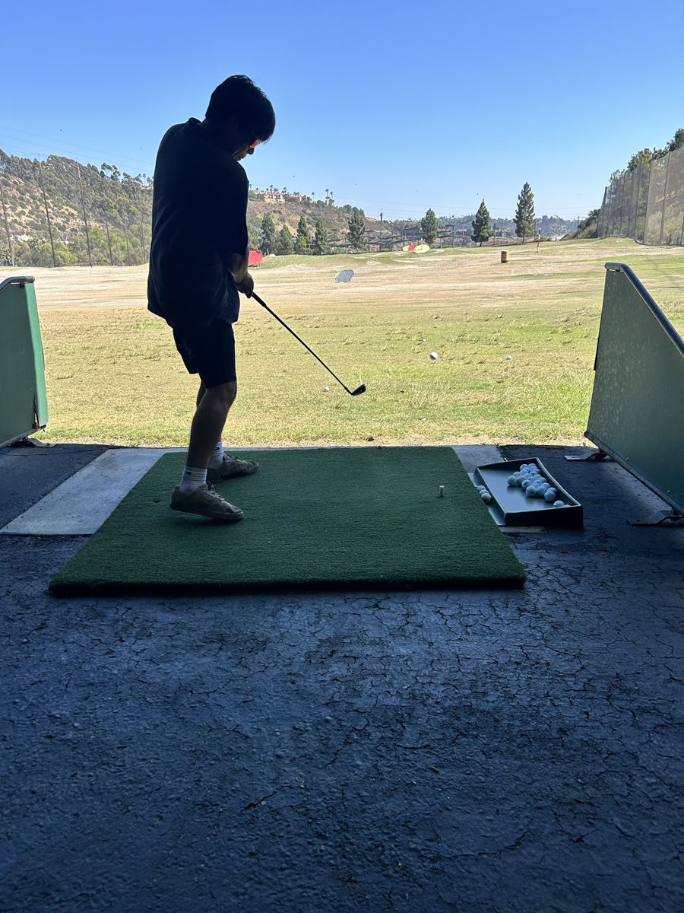
Study of a swingn.d. · driving rangeThe artist, in silhouette. The ball went somewhere.
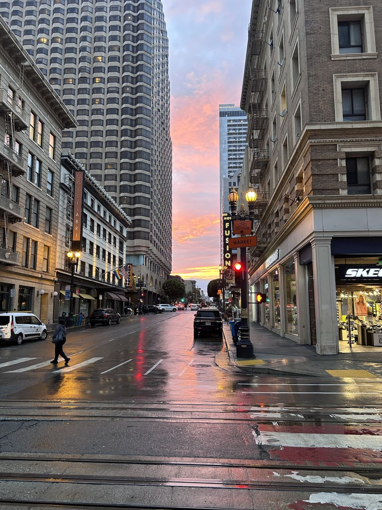
Market Street, after rainSan Francisco · n.d.The city's best light shows up for about four minutes.
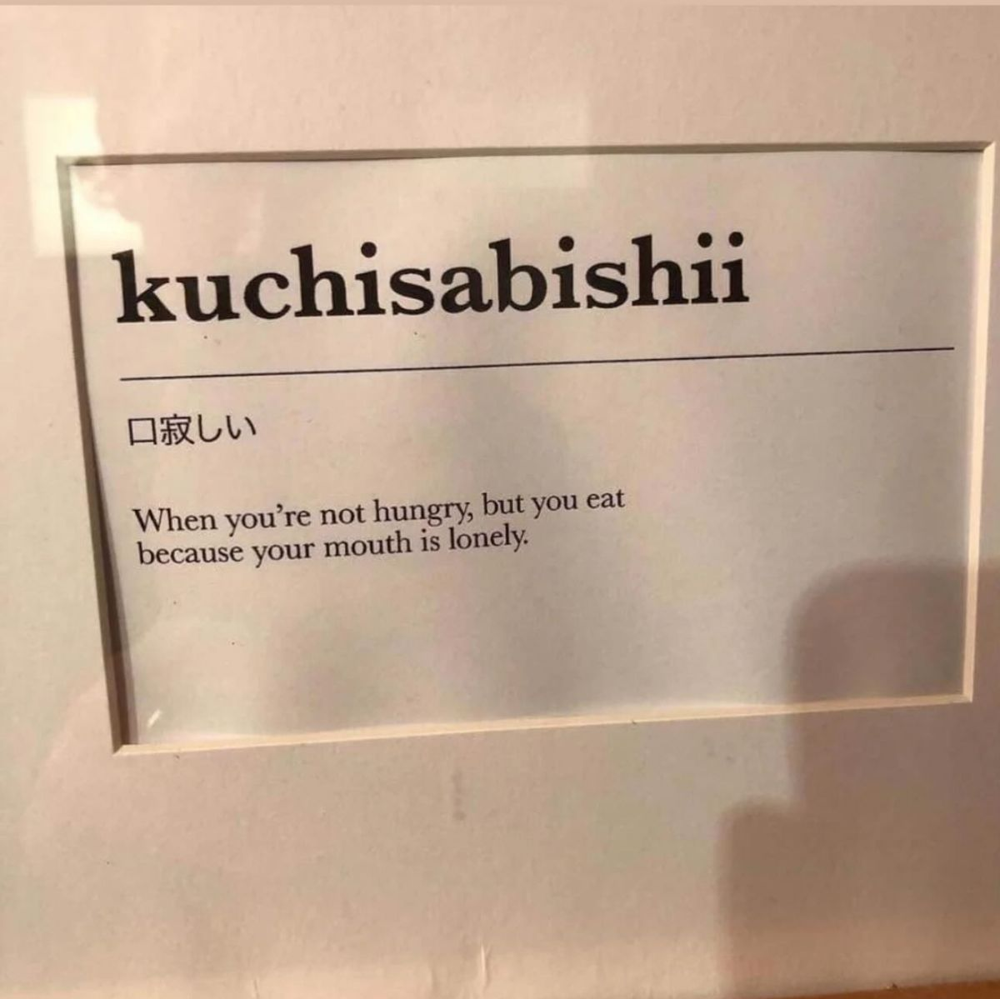
Kuchisabishii (口寂しい)Found text, framedWhen you're not hungry, but you eat because your mouth is lonely. The case for always cooking a little extra.
Nocturne with Joshua treesDesert · n.d. · long exposure
PracticeDrumstick, blistersI drum occasionally. The blisters suggest otherwise.
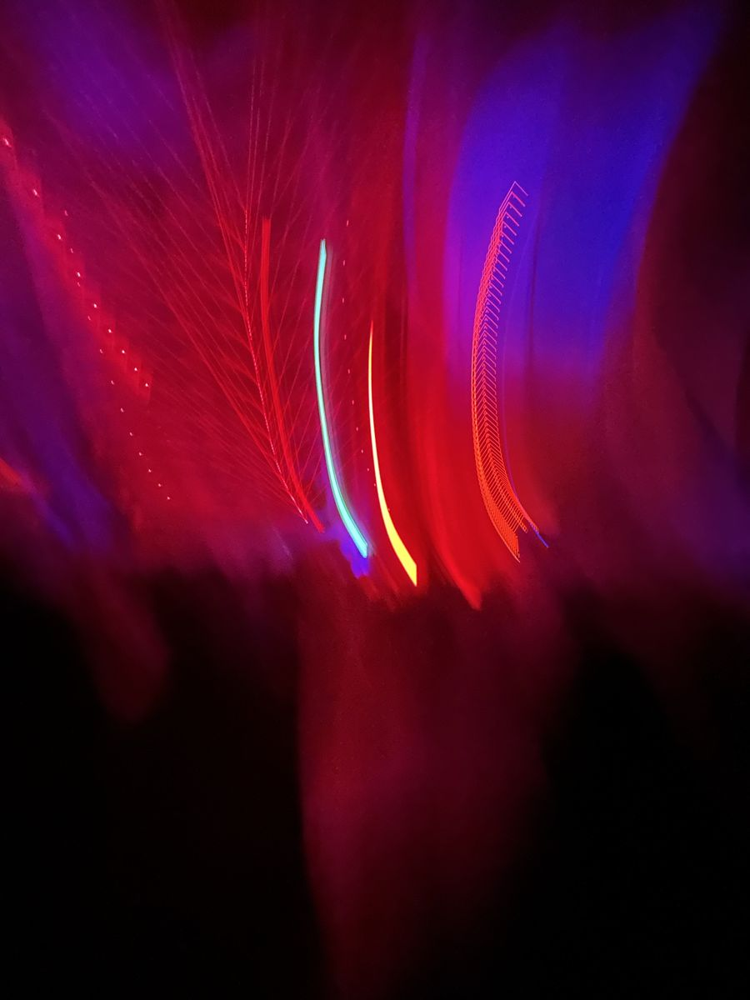
Untitled (somewhere loud)n.d. · motion blur
Granite, Yosemiten.d.Looking up for a long time.
Manhattan, from the Brooklyn BridgeNew York · n.d.
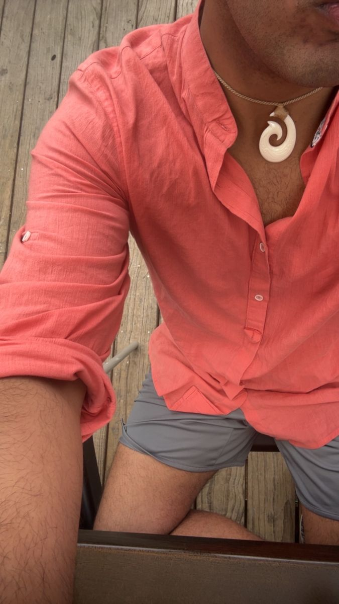
Self-portrait with hei mataun.d. · croppedA carved Māori hook from New Zealand, worn for new beginnings and harmony. The face is withheld.
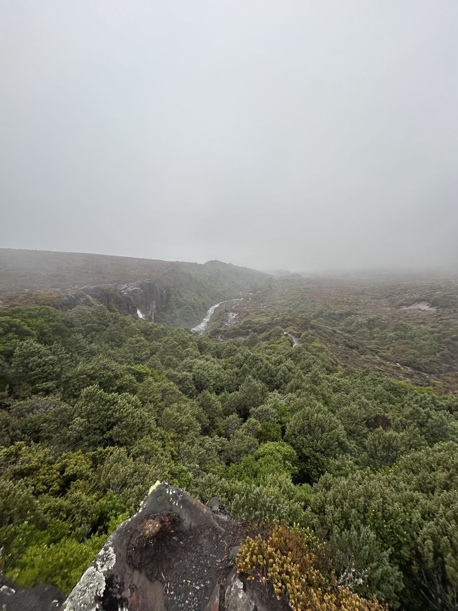
Walking into MordorNew Zealand · n.d.The landscape behind the Mordor battle in The Return of the King. The fog was not added in post.
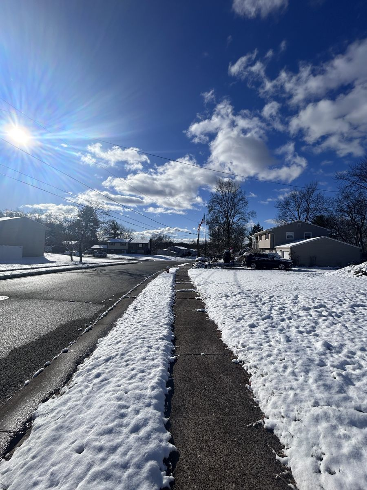
First snown.d.Someone shoveled the sidewalk. Someone always does.
Sky TowerAuckland · n.d.
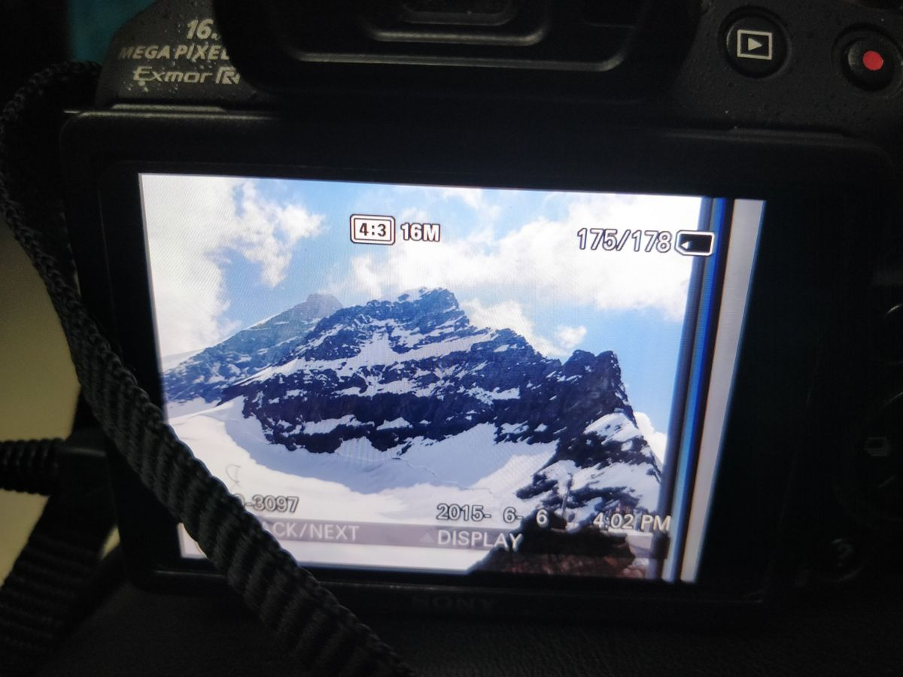
Jungfrau, on the little screenSwitzerland · 2015The only piece in the room that dates itself: the camera stamped it 6 June 2015, 4:02 PM.
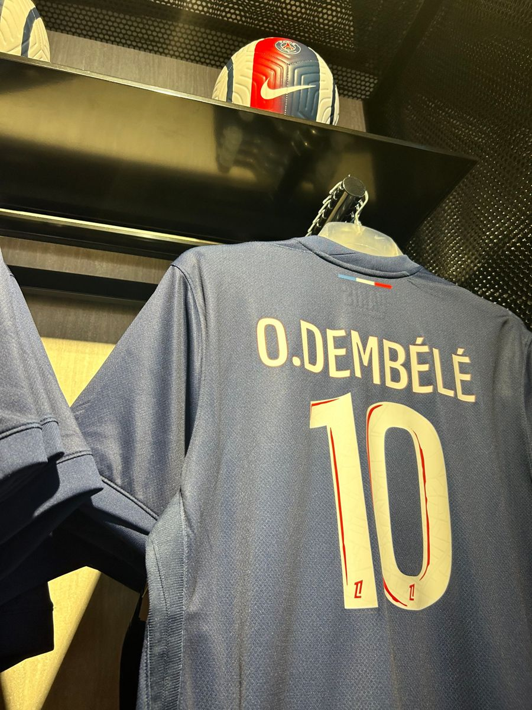
Enemy territoryOfficial PSG store, Qatar · n.d.An Arsenal fan, browsing. Nothing was purchased.
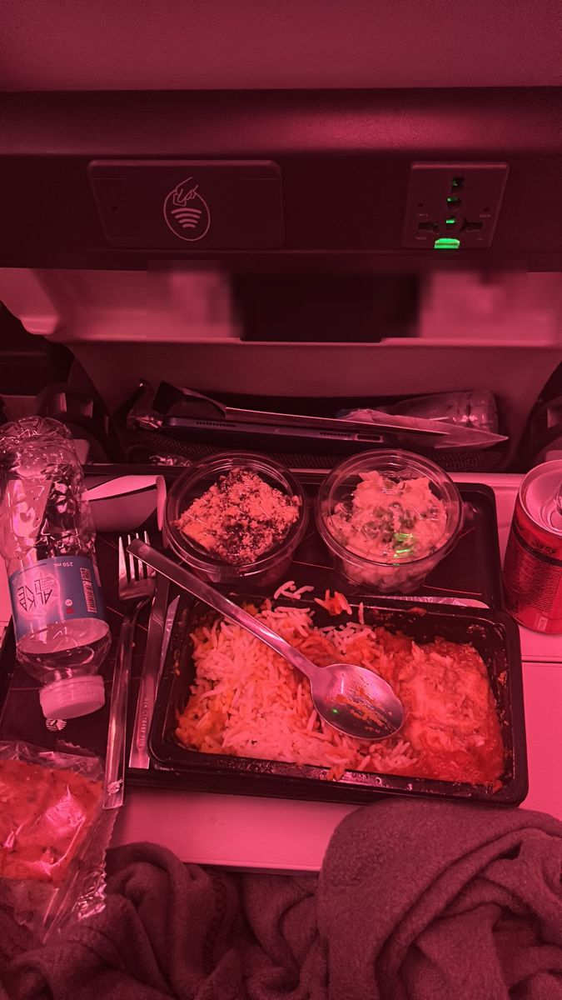
Dinner at cruising altitudeEconomy, somewhere above the clouds · n.d.See also: kuchisabishii.
Room II · The work
Speech models for the languages most AI gets wrong
Big multilingual speech models split their capacity across a hundred languages, and most of those languages lose out. In BuzzASR (EMNLP 2026) we trained a separate Whisper-large-v3 for each of 102 languages instead, and for many of them gave the model a tokenizer built for that language. I'm first author, with Aditya Yadavalli, Catherine Arnett and Alex Warstadt (LeMN Lab, UC San Diego, and EleutherAI).
77/102
languages where BuzzASR beats Whisper-large-v3
2.18×
median drop in character error rate (2.84× mean)
27
languages where it's the best open system we tested, including Omnilingual 7B
~18K
downloads of the 102 models on Hugging Face in the past month
How it works
Replace the tokenizer. Whisper's byte-level BPE chops non-Latin scripts into tiny pieces. We train a BPE tokenizer on each language's own text, raising the median from 2.38 to 5.04 characters per token (13.77× for Lao).
Warm-start the new embeddings. Each new token starts as the sum of the old Whisper sub-token vectors it replaces, so the model keeps what it already knows.
Teach the decoder the new vocabulary. Mix text-only language modeling (on the Goldfish corpora) with speech recognition, then finish with plain ASR fine-tuning.
Pick the best per language. Simple fine-tuning or the full recipe, three configurations each: 612 fine-tuned models in total.
Same sentence · same decoder
Rahvusraamatukogu digitaalarhiiv sisaldab tuhandeid vanu ajaleheartikleid.
Whisper
28
BuzzASR
10
Rahvusraamatukogu2026 · tokens on screen10 tokens instead of 28 for the same Estonian sentence. Time per token is fixed, so decoding finishes 2.4× sooner.
What we found
Median error reduction, grouped by how badly zero-shot Whisper does on each language. The worse Whisper is, the more a specialist helps.
Biggest gains where Whisper is weakest. A 3.45× median reduction across Whisper's 51 worst languages. Amharic goes from 191% CER to about 9%.
Native tokenizers decode faster. Per-token speed is identical (about 73 tokens/s), so shorter outputs mean lower latency: 785 → 503 ms per utterance (median, ~1.6×), and 3.51× for scripts like Ge'ez and Georgian.
One language per model beats pairs. Monolingual models have about 1.25× lower CER than bilingual ones, whether or not the two languages are related.
The full recipe wins where the tokenizer breaks. Simple fine-tuning wins 55 languages and the full recipe 47; the full recipe dominates when Whisper's tokenizer gets under one character per token.
A one-line bug taught us a lot. Our first tokenizers silently ignored their splitting rule because it was passed as a plain string. The write-up.
In the wild
Since the release, people we've never met have put the models to work, and tested them harder than we did.
On a phone, offline
Hungarian, in a pocket
A user in Hungary quantized BuzzASR/hungarian to GGUF (Q5_K_M, 1.1 GB) and uses it every day as offline voice input on a Samsung S24. A 28-second recording transcribes in about 20 seconds, faster than real time, with no internet. By their account, no other offline model they've tried handles Hungarian with such a low error rate.
Their testing also found what to fix next: the models output no punctuation, and words can merge where long audio is split.
Independent benchmark
Hungarian: most accurate of 8
2,000 Common Voice 22 test clips, one RTX 3090, greedy decoding
Model
WER %
Speed
BuzzASR/hungarian
9.96
34×
NVIDIA Parakeet-TDT 0.6B v3
10.45
44×
Hungarian Whisper-turbo fine-tune
10.85
80×
NVIDIA Canary-1B v2
14.54
150×
Whisper-large-v3 (zero-shot)
17.80
23×
Speed is audio duration ÷ processing time. Common Voice is in-domain for BuzzASR, which trained on Common Voice 25.
Independent evaluation
Korean: read, conversational, telephone
A speech engineer in Korea independently tested BuzzASR/korean against six other setups, scoring so that spacing and number notation don't count as errors.
Test audio
CER %
Rank
Read speech (3 public sets)
3.72
1st of 7
Telephone, 8 kHz
5.36
2nd of 7
Conversational (KsponSpeech)
9.71
4th of 7
On telephone audio, zero-shot Whisper is still ahead (5.02). We're now working together on what this means for evaluating Korean ASR.
Community ports
Running everywhere
Apple MLX, 8-bit, for Macs (Korean)
whisper.cpp / GGML, for CPUs and edge devices (Korean)
Core ML / WhisperKit, for iPhone (Sorani Kurdish)
GGUF, Q5_K_M, for Android (Hungarian)
Next for us: official quantized checkpoints with accuracy measured before and after quantization, punctuation, and faster turbo-based models.
On stage
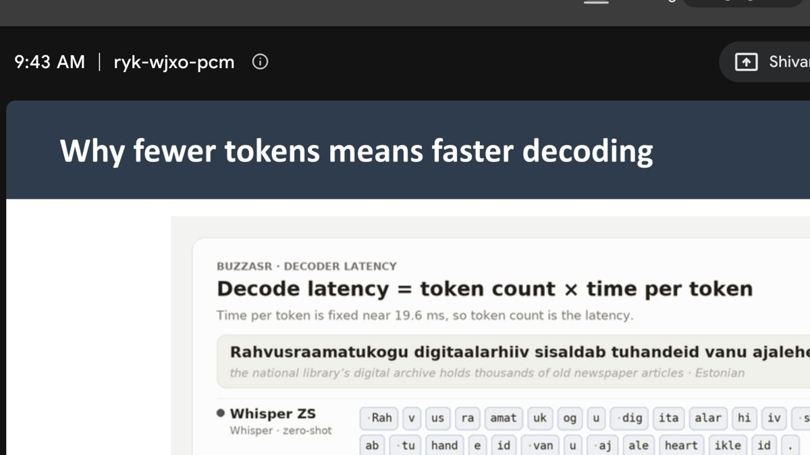
Why fewer tokens means faster decodingCloudflare AI Meetup · 27 Oct 2026Slide 16 of the talk, live on the call.
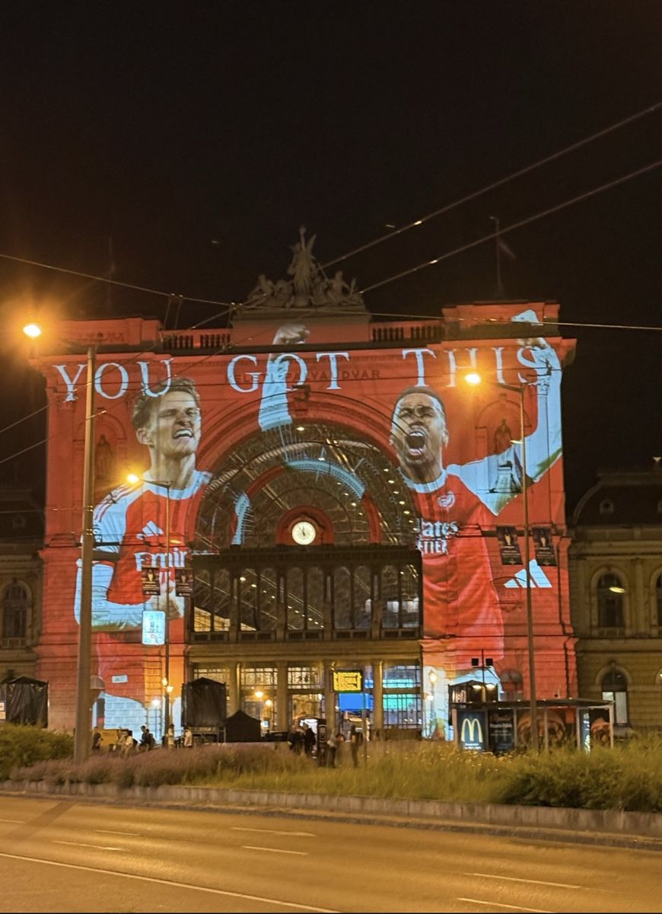
YOU GOT THISKeleti station, Budapest · n.d.Arsenal, projected across a train station. Budapest, the city where BuzzASR had its EMNLP poster. Lifelong Gunner.
Oct 2026
Cloudflare AI Meetup
Invited talk on BuzzASR, hosted by Juan Miguel Cejuela: why specialist models beat one model for everything, how native tokenizers cut decoding time, and what that means for voice AI at the edge, from per-language routing to models people already run offline on their phones.
The Q&A asked whether the same efficiency could come from working on the representations between encoder and decoder. Still thinking about it.
Oct 2026
EMNLP 2026, Budapest
BuzzASR was presented at EMNLP 2026.
2026
SCiL @ ACL 2026
An early BuzzASR poster at SCiL, at ACL 2026.
Elsewhere
2026 –
RL post-training for speech recognition
GRPO on top of BuzzASR with verifiable rewards for accuracy, hallucination suppression, proper nouns and code-switching. Does a better tokenizer make RL work better?
2025 –
Walmart Global Tech · Platform Engineer
Production infrastructure for internal agentic AI, multi-agent and ML systems: model serving, inference routing, rollout and evaluation.
Cut cross-region inference latency 45% by geo-sharding model traffic with Istio and consistent-hash routing for session affinity.
Own model rollouts with Flagger: canary analysis, Prometheus/Grafana success-rate gating, autoscaling and automatic rollback on regressions.
Built pre-release evaluation for non-deterministic agent behavior, comparing responses across production, QA and staging to catch behavioral diffs before release.
Built a diff-aware webhook validator (JsonPath and GraphQL) for Agent-to-Agent (A2A) protocol message validation.
Before
Parabole.ai, Dell, and an M.S. at UC San Diego
CUDA kernels and KV caching (30% lower inference latency), and predictive maintenance on hardware telemetry.
Room III · Reading room
Writing
Essays and notes on speech, languages, research, and whatever Nietzsche is arguing with me about this month.
A question about tokens turned into five things I want to try next with BuzzASR.
Shivam Singh · 8 min read · Oct 29, 2026
On Tuesday I gave a talk about BuzzASR at Cloudflare's AI Meetup. BuzzASR is a set of 102 speech recognition models, one for each language, and the short version of the talk was that specialists beat one model that tries to do every language. Giving each model its own tokenizer also makes it faster.
The talk went fine. The Q&A was better. Someone asked a question I haven't stopped thinking about, and it pulled a few other loose threads along with it. This post is me writing them down.
Fewer tokens, or cheaper tokens?
The question was roughly this: you got your speedup by changing the tokenizer. Could you get the same thing by changing what the encoder hands to the decoder?
I find it easiest to think of decoding time as two numbers multiplied together:
N is how many tokens the model writes, and the part in brackets is what each one costs. Some of that cost is fixed, and some of it grows with F, the number of audio frames the decoder looks at every time it writes a token.
Our tokenizers shrink N. For one Estonian sentence, Whisper needs 28 tokens and our model needs 10. The cost per token didn't change at all in our measurements (about 73 tokens a second for every model), so the whole speedup came from writing fewer tokens.
The question from the audience is about the other number, F. Whisper always pads audio to 30 seconds, so its encoder produces 1,500 frames even if you only said three words, and every token the decoder writes has to look at all of them.
Each box is tokens × audio frames for the same sentence, drawn to scale, assuming a 6-second clip. Changing the tokenizer makes the box narrower. Trimming the padding makes it shorter. Together it's about 14× less work.
If you could cut F without losing what's in the audio, every token would get cheaper. And because the two effects multiply, you'd keep the tokenizer gains on top.
I'd start with the boring version: throw away the frames that are just padding. Most of our test clips are well under 30 seconds, so that alone might be a big win. After that I'd try averaging neighbouring frames, merging frames that look the same (silence, long vowels), and finally a small learned layer that squeezes the encoder output into a fixed number of vectors.
What worries me is who pays for it. Squeezing the audio will probably hurt fast speech and low-resource languages first, and those are exactly the languages BuzzASR exists for. So every result has to be broken down by language, not averaged.
Does this work beyond Whisper?
Everything we built sits on top of Whisper, so it's fair to ask whether we just got lucky with Whisper's tokenizer.
We have a hint that we didn't. Swapping the tokenizer helped most in the languages where Whisper's tokenizer was doing the worst job, needing more than one token for every character. In those 18 languages the new tokenizer won 16 times. Where Whisper's tokenizer was already doing fine, it won about a third of the time.
How often the new tokenizer beat plain fine-tuning, grouped by how many characters Whisper fits into one token.
If that pattern holds, you should be able to predict the gain before training anything, just by counting how many characters each token covers before and after:
(Those are our median numbers across all 102 languages.) I'd like to test this on a few other open speech models with different tokenizers: write the prediction down first, then run the recipe and see if it holds. If it does, people could tell whether this is worth doing without training anything.
What about CTC models?
A lot of speech models don't write text one token at a time. CTC models label every slice of audio at once, using an extra "nothing here" label, and then clean up the result.
The blank between the two l's is what lets it spell a double letter.
So fewer tokens doesn't make these models faster, and the speed story above doesn't apply. The tokenizer still matters, though, because a CTC model can only produce as many labels as it has audio frames:
labels written + repeated letters that need a blank between them ≤ audio frames
Bigger tokens make that limit easier to fit under, but each one is rarer, and with only about 10 hours of audio for some languages, rare is a problem. For CTC I'd ask a different question: not "is it faster?" but "what's the right size of token for this script?"
BPE or Unigram?
All our tokenizers are BPE, which always splits a word the same way. The other common option, Unigram, gives every possible split a probability:
The useful part is that you can sample from it, so during training the model sees the same word split in different ways:
alwaysajaleheartikleid
sampledajaleheartikleid
sampledajalehteartikleid
Made-up splits of the Estonian word ajaleheartikleid ("newspaper articles"), just to show the idea.
For languages where we only have a few hours of audio, that variety might work like free extra data. The version I like is a mix: train with random splits so the model gets the variety, then use the single best split when transcribing, so outputs stay short and fast. BPE has a similar trick called BPE-dropout, so we'd compare the two.
Can reinforcement learning fix the loops?
This is the one I'm most excited about. Every so often a speech model gets stuck repeating the same word over and over. Early in the project those loops pushed some of our error rates over 100%. Right now we stop them with decoding settings, but an independent evaluation of our Korean model showed those settings make everything else slightly worse, by 0.3 to 0.9 points.
I'd rather teach the model not to loop in the first place, using GRPO. The idea is simple: for each clip, let the model write eight transcripts, score them, and nudge it toward the ones that beat the group's average.
how much better transcript i scored than the group's average μ, scaled by the spread σ
Example scores for eight transcripts of one clip. The dashed line is the group average (0.74). Above it gets reinforced, below it gets discouraged.
The score is accuracy minus a penalty for loops and a penalty for hallucinated words, including any text at all on clips that are just silence:
I'd love to reward efficiency too, but if you reward short answers, the model just learns to stop early. So we'd measure it instead of rewarding it.
The comparison I'm most curious about is where to start from. We have two versions of every model: one fine-tuned the simple way, and one with the new tokenizer. The second writes shorter outputs, so each training sample is cheaper to generate. My guess is that it learns faster per hour of GPU time, especially for scripts that Whisper chops into tiny pieces.
Before all of that
There's something more practical to do first. A user in Hungary compressed our Hungarian model down to 1.1 GB, and now uses it every day as offline voice input on their phone. A 28-second voice note takes about 20 seconds to transcribe, with no internet. It took them six hours to figure out how to convert it.
Nobody should have to do that. So our next step is to release official compressed versions ourselves: GGUF for Android and whisper.cpp, Core ML for iPhones, and MLX for Macs. We'll publish how much accuracy each compression level costs, for every language, and fix the two problems that user found. The models don't output punctuation, because we trained them on transcripts without it, and words sometimes run together where a long recording gets split up.
None of this is answered yet, which is the fun part. If you're working on any of it, I'd love to hear from you. And thanks to Juan Miguel and the Cloudflare team for having me.